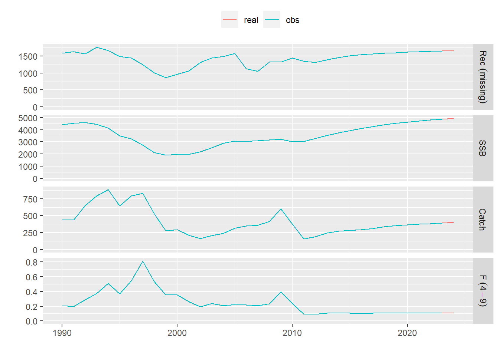
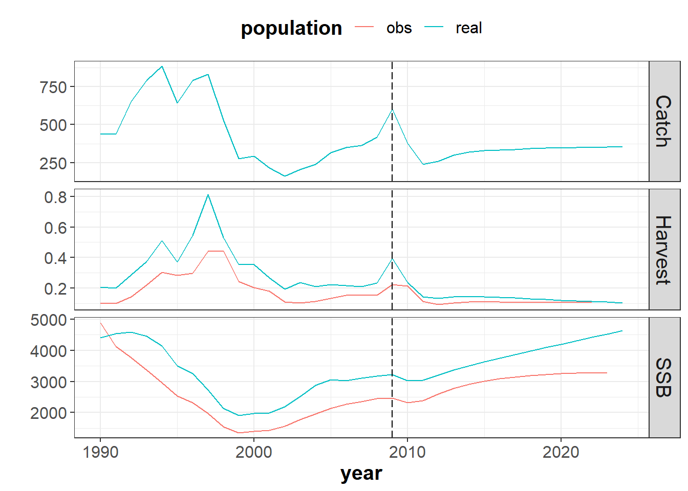
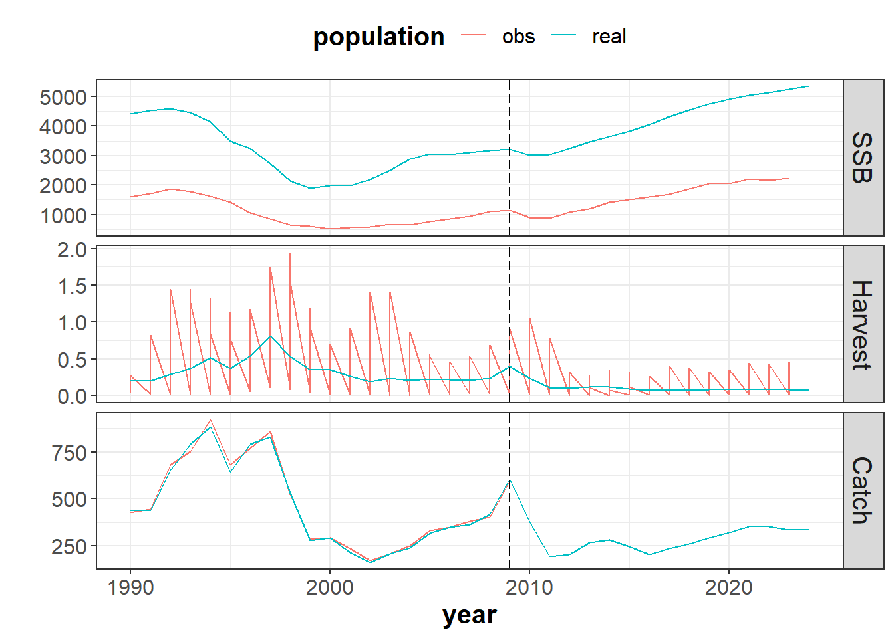
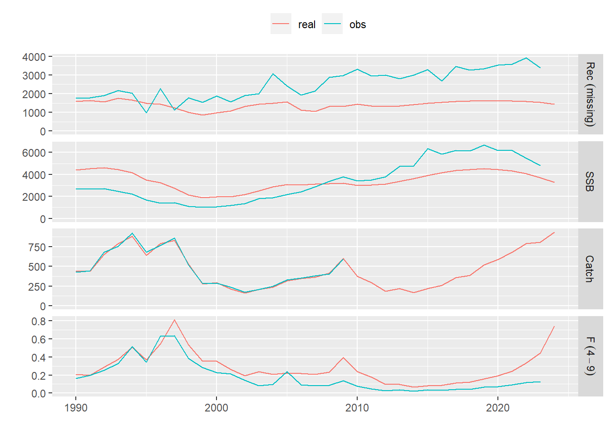

Using different Assessment models in the Management Procedure of FLBEIA
15 may., 2020

Aim
FLBEIA (Garcia et al. 2017) provides a battery of tutorials for learning how to use this software. This is the thirth tutorial of FLBEIA and it is a practical guide about how to implement different assessment models within FLBEIA.
In this tutorial they are presented some examples on how to include different assessment models in the management procedure to generate the observed population.
The Management Procedure Model (MPM) is divided into 3 components: the observation, the assessment and the management advice. The observation component produces the required data to run the assessment. Then, the assessment component is applied to those data to obtain the observed populations. Finally, the management advice component produces a management advice based on the observed populations. MPM procedure is applied yearly in the appropriate season of the year. Not necessarily in the last season, for example, it can be simulated as in the case of anchovy in the Bay of Biscay, where management is applied from the mid-season of one year to the mid-season of the next year. Simulations with multi-annual advice is also possible.
The exact way to define the objects used to set the simulation is described in the FLBEIA manual. This manual can be downloaded from GitHub, within the ‘doc’ folder of the package installation or typing help(package = FLBEIA) in the R console. Nevertheless, the objects to set the simulation doesn’t need to be defined for the following examples, as the dataset one from the FLBEIA package will be used. For details on these objects, see tutorial on FLBEIA - Simple example.
To see all the datasets available in the FLBEIA package:
data(package='FLBEIA')Required packages to run this tutorial
To follow this tutorial you should have installed the following packages:
If you are using Windows, please use 32-bit R version because some of the packages do not work in 64-bit.
install.packages( c("ggplot2"))
install.packages( c("FLCore", "FLBEIA", "FLFleets", "FLash",
"FLAssess", "FLXSA", "FLa4a", "ggplotFL"),
repos="http://flr-project.org/R")
# Package for running SPiCT (only development version --> needed package "devtools"")
install.packages("devtools")
library(devtools)
install_github("mawp/spict/spict")Load all necessary packages.
# Load all necessary packages.
library(FLBEIA)
library(FLAssess)
library(FLash)
library(ggplotFL)Observation models
The following alternatives are possible in the observation model, depending on the inclusion or not of the assessement in the MP.
- Stock without assessment:
- The stock is not observed (
NoObsStock), for example in the cases when- there is no need to observe the stock as it is managed independently to its status (e.g. via fixed TAC),
- or when you use an alternative to know the abundance, through the observation of an abundance index, in biomass (
bioInd) or age structured (ageInd), for example when using a HCR that requires an index to set the TAC.
- The population and the fleet are observed without errors (
perfectObs), that could be usefull to test the HCR without any observation error; - It can be simulated an assessment, age structured (
age2agePop) or aggregated in biomass (age2bioPoporbio2bioPop, respectively if stock is age structured or aggregated in biomass), given different types of errors defined a priori (e.g. ageing error, errors in the observation of numbers, weights or total biomass at age or errors in the observation of total landings or discards).
- The stock is not observed (
- Stock with assessment:
- If biological information (e.g. natural mortality, mean weights, maturity,…) and/or catch information is required as input for the assessment, in biomass (
age2bioDatorbio2bioDat, respectively if stock is age structured or aggregated in biomass) or age structured (age2ageDat); - If the observation of an abundance index is required, in biomass (
bioInd) or age structured (ageInd).
- If biological information (e.g. natural mortality, mean weights, maturity,…) and/or catch information is required as input for the assessment, in biomass (
For more details on these functions and the related control objects see Sections 4.3.6-4.3.8 and Table C.5 in the FLBEIA manual.
Assessment models
In this tutorial there will be presented several examples on the introduction of alternative assesments in the MP.
Alternative examples:
without assessment;
assessment which requires a biomass index, example with SPiCT assessment model;
assessment which requires an age structured index, example with SCA assessment model;
assessment which requires the observation of the population and the fleets and abundance indices, example with XSA assessment model.
Example 0: no assessment
Description
This example represents a simulation without assessment in the Management Procedure (MP).
In this case, the Operating Model (OM) runs annually and it is formed by a single age-structured stock and an unique fleet which activity is performed in an unique metier. In the Management Procedure (MP), the fleet dynamics is assumed to be a Simple Mixed Fisheries behaviour (for details, see information on SMFB function in the FLBEIA manual, the stock is observed without error, there is not assessment carried out and the ICES HCR (ICES 2009) is used to set the TAC yearly.
All the objects have 3 iterations and uncertainty in the projections comes exclusively from the generation of the new incoming recruitments.
- Operating model:
- Biological:
- Population dynamics:
stk1- age structured population growth - SR model:
stk1- Beverthon and Holt autoregressive/segmented regression
- Population dynamics:
- Fleet:
fl1- Simple Mixed Fisheries Behaviour - Covariates: covariates related to economy (e.g. number of vessels, fuel costs,…)
- Biological:
- Management Procedure:
- Observation:
stk1- perfect observation - Assessment:
stk1- no assessment - Management advice:
stk1- ICES harvest control rule
- Observation:
The neccesary FLR objects to run FLBEIA are available in the dataset called one.
rm(list=ls()) # empty the workspace
data(one) # load the datasetExploring the data
Information related to assessment component of the MP is provided in oneAssC object.
oneAssCIn this case, no abundance index is required, as there is no assessment and the HCR (IcesHCR) does not require any index, as it sets the TAC based on the perceived stock status.
Run FLBEIA
s0 <- FLBEIA( biols = oneBio, # FLBiols: FLBiol for stk1.
SRs = oneSR, # List: FLSRSim for stk1.
BDs = NULL, # Not population with biomass dynamics.
fleets = oneFl, # FLFleets: one fleet.
covars = oneCv, # List: covars related to economy.
indices = NULL, # Not indices.
advice = oneAdv, # List: 'TAC' and 'quota.share'
main.ctrl = oneMainC, # List: info on start and end of the simulation.
biols.ctrl = oneBioC, # List: model to simulate the stock dynamics.
fleets.ctrl = oneFlC, # List: fleet dynamics models select. and other params.
covars.ctrl = oneCvC, # List: covariates dynamics ("fixedCovar").
obs.ctrl = oneObsC, # List: type of stock and index observation
# ("PerfectObs").
assess.ctrl = oneAssC, # List: assessment model used ("NoAssessment").
advice.ctrl = oneAdvC) # List: rule for TAC advice ("IcesHCR").Results
We show a comparison between the real population and the perceived one (i.e. assessment results).
stk1.mp0 <- s0$stocks[['stk1']]
stk1.om0 <- biolfleets2flstock(s0$biols[['stk1']], s0$fleets)
plot( FLStocks(real=stk1.om0, obs=stk1.mp0)) + theme(legend.position="top")
There are exactly the same, as expected, because there is not any observation error.
Example 1: SPiCT assessment
Description
This example shows how to use SPiCT assessment (Pedersen and Berg 2016) to obtain the observed populations in the Management Procedure (MP).
Currently there is an R package called spict that provides the framework to fit a surplus production model in R using fisheries catch and biomass index data, specifically the model is a Stochastic suplus Production model in Continuous-Time (SPiCT).
fit.spict is the function to fit a contiunuous-time surplus production model to data using the TMB package. Following arguments are required:
inp : List of input variables as output by check.inp
dbg : Debugging option. Will print out runtime information useful for debugging if set to 1. Will print even more if set to 2.
For more details, type ?fit.spict in the R console.
Within FLBEIA these arguments are given to the function through the assess.ctrl object, which is a named list with the names of the stocks and the following components for each stock:
assess.model: character with the name of the assessment model or ‘NoAssessment’. To do the call to SPiCT, this argument has to be set to
spict2flbeia, which is an FLBEIA function that links the inputs and outputs offit.spictfunction with FLBEIA and calls tofit.spictfunction.control: control object, which depends on the selected assessment model (e.g. FLXSA.control() for XSA assessment). +The FLXSA.control function creates a new control object required by XSA model. For more details see the FLR tutorial on Stock assessment using eXtended Survivors Analysis with FLXSA (link) . In this case, the default parameter values will be used.
We load the SPiCT library:
library(spict)Exploring the data
In this example, the same dataset as in Example 0 will be used.
Information related to assessment component of the MP is provided in oneAssC object.
oneAssCNow we need to set the control parameters for this assessment.
oneAssC.spict <- oneAssC
oneAssC.spict[["stk1"]]$assess.model <- "spict2flbeia" # selected assessment model
oneAssC.spict[["stk1"]]$harvest.units <- "f"Additionally, we need and abundance index. We will take one age-structured oneIndAge object and its related control oneObsCIndAge. And inform in advice.ctrl what index should be used.
summary(oneIndBio)| Length | Class | Mode | |
|---|---|---|---|
| stk1 | 1 | FLIndices | list |
summary(oneObsCIndBio)| Length | Class | Mode | |
|---|---|---|---|
| stk1 | 2 | -none- | list |
# Check the observation controls related to the assessment and the observation of the index
oneObsCIndBio$stk1$stkObs$stkObs.model[1] "age2bioDat"oneObsCIndBio$stk1$indObs$idBio
$idBio$indObs.model
[1] "bioInd"Run FLBEIA
s1 <- FLBEIA( biols = oneBio, # FLBiols: FLBiol for stk1.
SRs = oneSR, # List: FLSRSim for stk1.
BDs = NULL, # Not population with biomass dynamics.
fleets = oneFl, # FLFleets: one fleet.
covars = oneCv, # List: covars related to economy.
indices = oneIndBio, # Biomass index.
advice = oneAdv, # List: 'TAC' and 'quota.share'
main.ctrl = oneMainC, # List: info on start and end of the simulation.
biols.ctrl = oneBioC, # List: model to simulate the stock dynamics.
fleets.ctrl = oneFlC, # List: fleet dynamics models select. and other params.
covars.ctrl = oneCvC, # List: covariates dynamics ("fixedCovar").
obs.ctrl = oneObsCIndBio, # List: type of stock and index observation
# ("age2bioDat","bioInd").
assess.ctrl = oneAssC.spict, # List: assessment model used ("spict2flbeia").
advice.ctrl = oneAdvC) # List: rule for TAC advice ("IcesHCR").Results
We show a comparison between the real population and the perceived one (i.e. assessment results).
stk1.mp1 <- s1$stocks[['stk1']]
stk1.om1 <- biolfleets2flstock(s1$biols[['stk1']], s1$fleets)
adf <- as.data.frame
s1_pop <- rbind( data.frame( population='obs', indicator='SSB', as.data.frame(ssb(stk1.mp1))),
data.frame( population='obs', indicator='Harvest', as.data.frame(harvest(stk1.mp1))),
data.frame( population='obs', indicator='Catch', as.data.frame(catch(stk1.mp1))),
data.frame( population='real', indicator='SSB', as.data.frame(ssb(stk1.om1))),
data.frame( population='real', indicator='Harvest', as.data.frame(fbar(stk1.om1))),
data.frame( population='real', indicator='Catch', as.data.frame(catch(stk1.om1))))
p <- ggplot( data=s1_pop, aes(x=year, y=data, color=population)) +
geom_line() +
facet_grid(indicator ~ ., scales="free") +
geom_vline(xintercept = oneMainC$sim.years[['initial']]-1, linetype = "longdash")+
theme_bw()+
theme(text=element_text(size=15),
title=element_text(size=15,face="bold"),
strip.text=element_text(size=15),
legend.position="top")+
ylab("")
print(p)
Example 2: Statistical Catch-at-Age assessment
Description
This example shows how to carry out an assessment using an Statistical Catch-at-Age method (Millar and Jardim 2015) to obtain the observed populations in the Management Procedure (MP).
Currently there is an R package called FLa4a that provides a simple and robust statistical Catch at Age model that is specifically designed for stocks with intermediate levels of data quantity and quality. sca is the User interface to the statistical catch-at-age method of the a4a stock assessment framework. Following arguments are required:
stock : An FLStock object to be used for the analysis
indices: An FLIndices object holding the indices of abundance to consider in the model
fmodel : A formula object depicting the model for log fishing mortality at age
qmodel : A list of formula objects depicting the models for log survey catchability at age
srmodel: A formula object depicting the model for log recruitment
fit : Character with type of fit: ‘MP’ or ‘assessment’; the former does not require the hessian to be computed, while the latter does.
For more details, type ?sca in the R console.
Within FLBEIA these arguments are given to the function through the assess.ctrl object, which is a named list with the names of the stocks and the following components for each stock:
assess.model: character with the name of the assessment model or ‘NoAssessment’. To do the call to
sca, this argument has to be set tosca2flbeia, wich is an FLBEIA function that links the inputs and outputs ofscafunction with FLBEIA and calls toscafunction.control: control object, which depends on the selected assessment model. That is a list with the controls required for sca assessment, these are
fmod,qmodandsrmod.
We load the FLa4a library.
library(FLa4a)The neccesary FLR objects to run FLBEIA are available in the dataset called one.
rm(list=ls()) # empty the workspace
data(one) # load the datasetHowever, in this dataset the assessment is set to noAssessment (that is, there is no assessment carried out in this case). So we need to change the initial settings in the loaded dataset to allow the call to SCA assessment model.
Exploring the data
Information related to assessment component of the MP is provided in oneAssC object.
oneAssCNow we need to set the control parameters for this assessment.
oneAssC.sca <- oneAssC
oneAssC.sca$stk1$assess.model <- "sca2flbeia" # selected assessment model
oneAssC.sca[["stk1"]]$harvest.units <- "f"
oneAssC.sca[["stk1"]]$control$test <- TRUE # control valuesAdditionally, we need and abundance index. We will take one age-structured oneIndAge object and its related control oneObsCIndAge. And inform in advice.ctrl what index should be used.
summary(oneIndAge)| Length | Class | Mode | |
|---|---|---|---|
| stk1 | 1 | FLIndices | list |
summary(oneObsCIndAge)| Length | Class | Mode | |
|---|---|---|---|
| stk1 | 2 | -none- | list |
# Check the observation controls related to the assessment and the observation of the index
oneObsCIndAge$stk1$stkObs$stkObs.model[1] "age2ageDat"oneObsCIndAge$stk1$indObs$idAge
$idAge$indObs.model
[1] "ageInd"Run FLBEIA
s2 <- FLBEIA( biols = oneBio, # FLBiols: FLBiol for stk1.
SRs = oneSR, # List: FLSRSim for stk1.
BDs = NULL, # Not population with biomass dynamics.
fleets = oneFl, # FLFleets: one fleet.
covars = oneCv, # List: covars related to economy.
indices = oneIndAge, # Age-structured index.
advice = oneAdv, # List: 'TAC' and 'quota.share'
main.ctrl = oneMainC, # List: info on start and end of the simulation.
biols.ctrl = oneBioC, # List: model to simulate the stock dynamics.
fleets.ctrl = oneFlC, # List: fleet dynamics models select. and other params.
covars.ctrl = oneCvC, # List: covariates dynamics ("fixedCovar").
obs.ctrl = oneObsCIndAge, # List: type of stock and index observation
# ("age2ageDat","ageInd").
assess.ctrl = oneAssC.sca, # List: assessment model used ("sca2flbeia").
advice.ctrl = oneAdvC) # List: rule for TAC advice ("IcesHCR").Results
We show a comparison between the real population and the perceived one (i.e. assessment results).
stk1.mp2 <- s2$stocks[['stk1']]
stk1.om2 <- biolfleets2flstock(s2$biols[['stk1']], s2$fleets)
adf <- as.data.frame
s2_pop <- rbind( data.frame( population='obs', indicator='SSB', as.data.frame(ssb(stk1.mp2))),
data.frame( population='obs', indicator='Harvest', as.data.frame(harvest(stk1.mp2))),
data.frame( population='obs', indicator='Catch', as.data.frame(catch(stk1.mp2))),
data.frame( population='real', indicator='SSB', as.data.frame(ssb(stk1.om2))),
data.frame( population='real', indicator='Harvest', as.data.frame(fbar(stk1.om2))),
data.frame( population='real', indicator='Catch', as.data.frame(catch(stk1.om2))))
p <- ggplot( data=s2_pop, aes(x=year, y=data, color=population)) +
geom_line() +
facet_grid(indicator ~ ., scales="free") +
geom_vline(xintercept = oneMainC$sim.years[['initial']]-1, linetype = "longdash")+
theme_bw()+
theme(text=element_text(size=15),
title=element_text(size=15,face="bold"),
strip.text=element_text(size=15),
legend.position="top")+
ylab("")
print(p)
Example 3: XSA assessment
Description
This example shows how to use XSA assessment (Darby, Flatman, and Research 1994, @shepherd1997, @shepherd1999) to obtain the observed populations in the Management Procedure (MP).
Currently there is an R package called FLXSA that provides the framework to perform eXtended Survivor Analysis in FLR. FLXSA is the function to run an XSA analysis and creates an FLXSA object used to analyse its results. Following arguments are required:
stock : An FLStock object to be used for the analysis
indices: An FLIndices object holding the indices of abundance to consider in the model
control: An FLXSA.control object giving parameters of the model (see FLXSA.control)
desc : A short description of this analysis
For more details, type ?FLXSA in the R console.
Within FLBEIA these arguments are given to the function through the assess.ctrl object, which is a named list with the names of the stocks and the following components for each stock:
assess.model: character with the name of the assessment model or ‘NoAssessment’. To do the call to
FLXSA, this argument has to be set toFLXSA2flbeia, wich is an FLBEIA function that links the inputs and outputs ofFLXSAfunction with FLBEIA and calls toFLXSAfunction.control: control object, which depends on the selected assessment model. That is FLXSA.control() for XSA assessment. The FLXSA.control function creates a new control object required by XSA model. For more details see the FLR tutorial on Stock assessment using eXtended Survivors Analysis with FLXSA (link) . In this case, the default parameter values will be used.
We load the FLXSA library.
library(FLXSA)The neccesary FLR objects to run this example are available in the dataset called one.
rm(list=ls()) # empty the workspace
data(one) # load the datasetHowever, in this dataset the assessment is set to noAssessment (that is, there is no assessment carried out). So we need to change the initial settings in the loaded dataset to allow the call to XSA assessment model.
Exploring the data
In this example, the same dataset as in Example 1 will be used, but as mentioned before some parameters related to the selected assessment (i.e. XSA) need to be set.
Information related to assessment component of the MP is provided in oneAssC object.
oneAssCThen we set the control parameters for XSA assessment:
oneAssC1 <- list()
oneAssC1$stk1 <- list()
oneAssC1$stk1$assess.model <- 'FLXSA2flbeia' # selected assessment model
oneAssC1$stk1$control <- FLXSA.control() # default control values
oneAssC1$stk1$work_w_Iter <- TRUE
oneAssC1$stk1$harvest.units <- 'f'Additionally, we need an abundance index. We will take one age-structured index available at oneIndAge object and its related control object oneObsCIndAge. And inform in advice.ctrl which index should be used.
summary(oneIndAge)| Length | Class | Mode | |
|---|---|---|---|
| stk1 | 1 | FLIndices | list |
summary(oneObsCIndAge)| Length | Class | Mode | |
|---|---|---|---|
| stk1 | 2 | -none- | list |
# Check the observation controls related to the assessment and the observation of the index
oneObsCIndAge$stk1$stkObs$stkObs.model[1] "age2ageDat"oneObsCIndAge$stk1$indObs$idAge
$idAge$indObs.model
[1] "ageInd"Run FLBEIA
s3 <- FLBEIA( biols = oneBio, # FLBiols: FLBiol for stk1.
SRs = oneSR, # List: FLSRSim for stk1.
BDs = NULL, # Not population with biomass dynamics.
fleets = oneFl, # FLFleets: one fleet.
covars = oneCv, # List: covars related to economy.
indices = oneIndAge, # Age-structured index.
advice = oneAdv, # List: 'TAC' and 'quota.share'
main.ctrl = oneMainC, # List: info on start and end of the simulation.
biols.ctrl = oneBioC, # List: model to simulate the stock dynamics.
fleets.ctrl = oneFlC, # List: fleet dynamics models select. and other params.
covars.ctrl = oneCvC, # List: covariates dynamics ("fixedCovar").
obs.ctrl = oneObsCIndAge, # List: type of stock and index observation
# ("age2ageDat","ageInd").
assess.ctrl = oneAssC1, # List: assessment model used ("FLXSAnew").
advice.ctrl = oneAdvC) # List: rule for TAC advice ("IcesHCR").Results
We show a comparison between the real population and the perceived one (i.e. assessment results).
stk1.mp3 <- s3$stocks[['stk1']]
stk1.om3 <- biolfleets2flstock(s3$biols[['stk1']], s3$fleets)
plot( FLStocks(real=stk1.om3, obs=stk1.mp3)) + theme(legend.position="top")
More information
- You can submit bug reports, questions or suggestions on this tutorial at https://github.com/flr/doc/issues.
- Or send a pull request to https://github.com/flr/doc/
- For more information on the FLR Project for Quantitative Fisheries Science in R, visit the FLR webpage, http://flr-project.org.
- You can submit bug reports, questions or suggestions specific to FLBEIA to flbeia@azti.es.
Software Versions
- R version 4.0.0 (2020-04-24)
- FLCore: 2.6.15
- FLBEIA: 1.15.4
- FLFleet: 2.6.1
- FLash: 2.5.11
- FLAssess: 2.6.3
- FLXSA: 2.6.4
- ggplotFL: 2.6.7.9006
- ggplot2: 3.3.0
- Compiled: Fri May 15 08:02:34 2020
License
This document is licensed under the Creative Commons Attribution-ShareAlike 4.0 International license.